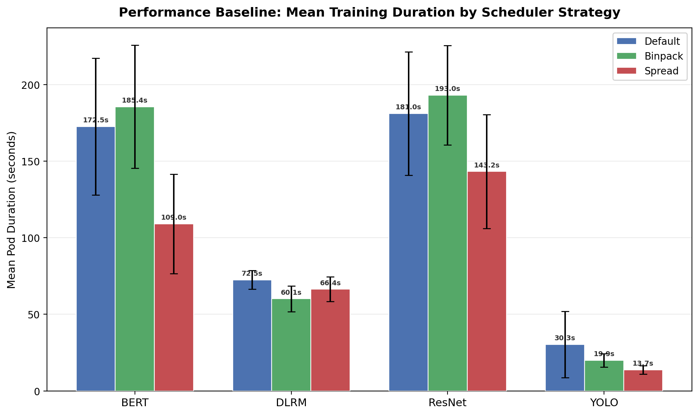
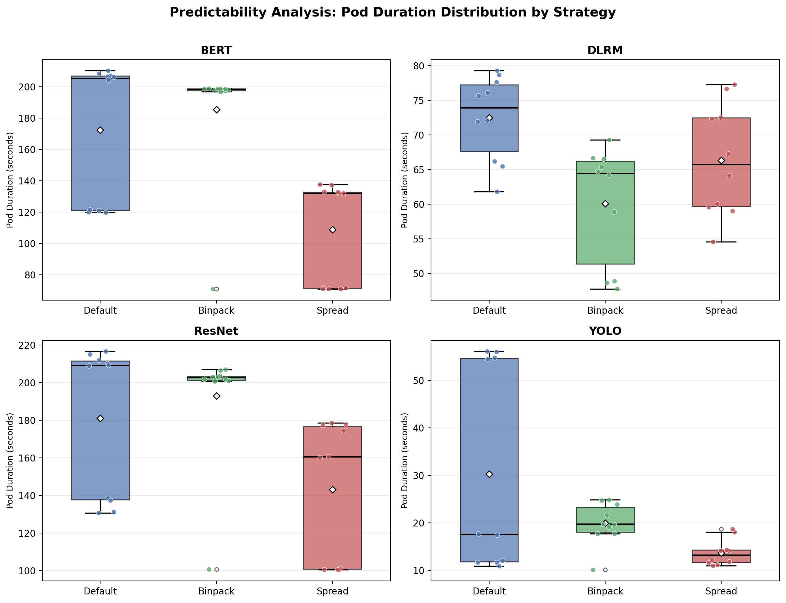
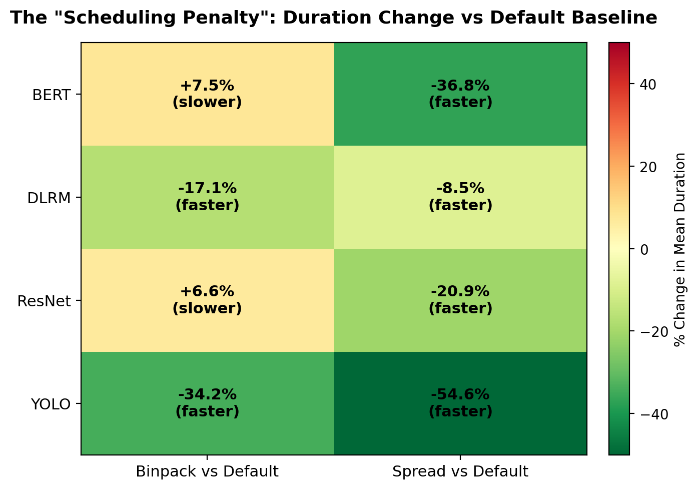
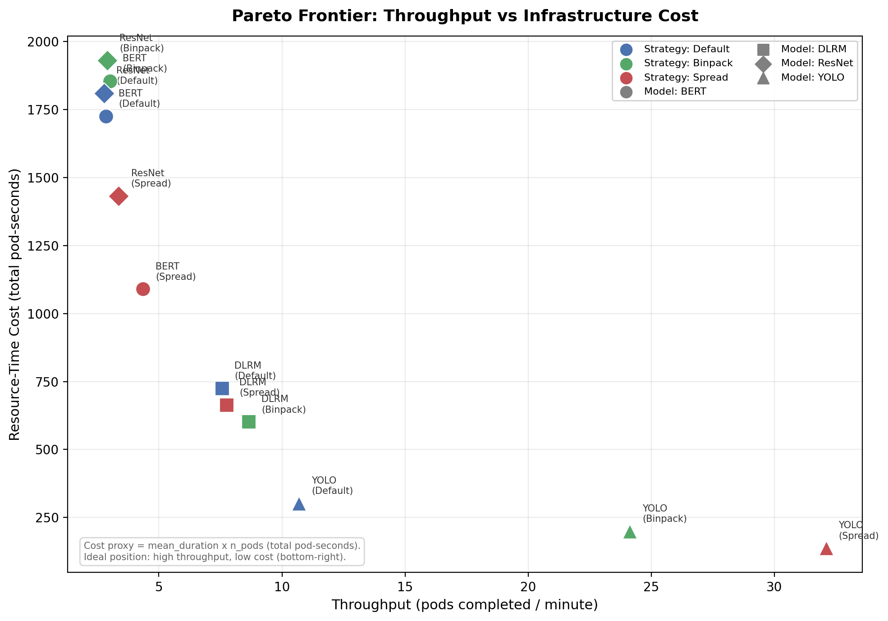

Optimized Kubernetes Scheduling for ML Workloads
An automated framework for benchmarking Default, Bin-pack, and Spread scheduling strategies against four real PyTorch training workloads on Kubernetes.
CSC4311 · Cloud Computing · Spring 2026 · Kshitij Mishra & Adrit Ganeriwala


What This Project Does
Machine learning training jobs consume significant compute, memory, and I/O. When you run these jobs on a Kubernetes cluster, the scheduler decides which node each pod lands on — and that placement directly affects how fast your job finishes.
This project packages four real PyTorch workloads (ResNet, BERT, YOLO, DLRM) into a Docker container, deploys them as Kubernetes batch Jobs (10 pods each), and runs the exact same workload under three scheduling strategies: Default, Bin-pack, and Spread. By comparing wall-clock time, resource contention, and pod placement, we answer: does the scheduler choice actually matter for ML workloads?
Docker
All four PyTorch benchmarks packaged into a single container image (ml-workload:v1). Built once, runs identically on Minikube or cloud GKE — only the scheduling changes.
Kubernetes
Batch Jobs with 10 completions and parallelism 5. The scheduler decides which node each pod goes to. On a multi-node cluster, this placement is where Default, Bin-pack, and Spread diverge.
ml-scheduling namespace
Dedicated namespace with ResourceQuota (4 CPU, 5 Gi memory, 20 pods) and LimitRange — simulating a realistic shared-cluster environment with hard resource ceilings.
How It Works
The exact pipeline that run_experiment.py executes, step by step.
Workflow Architecture
Preflight Cleanup automatic
Deletes all existing Jobs and Pods in ml-scheduling so the cluster is clean before each run.
kubectl delete jobs -n ml-scheduling --all
kubectl delete pods -n ml-scheduling --allPolls until namespace is empty (120s timeout). Skip with --skip-cleanup.
Ensure Secondary Schedulers binpack / spread only
If strategy is binpack or spread, the script applies RBAC and Deployment manifests, then waits for scheduler pods to be ready.
secondary-scheduler-rbac.yaml → secondary-scheduler-binpack.yaml → secondary-scheduler-spread.yaml
kubectl rollout status (180s timeout per deployment)Render Job Manifest template
Reads experiment-template.yaml and substitutes placeholders with the chosen model profile and scheduler.
Apply Job & Wait
Creates the Job in Kubernetes and polls every 2s until all pods succeed or timeout (default 3600s).
Collect Pod Logs
Fetches logs from every pod and parses the standardized result block.
Write Artifacts output
Writes all collected data to a timestamped run folder under runs/.
Teardown cleanup
Deletes the Job from the cluster. Skip with --skip-teardown to inspect pods.
Aggregate & Visualize separate script
After all experiments, aggregate into comparison charts.
python3 scripts/visualize_runs.py # basic charts
python3 scripts/visualize_presentation.py # presentation-quality chartsML Workloads
Four PyTorch benchmarks, one entrypoint: python src/run_task.py --task {resnet,bert,yolo,dlrm}
 ResNet-50
ResNet-50
40 training steps, batch size 8, 224×224 images. Evaluates memory allocation limits and bus contention under heavy compute.
BERT-Base
30 forward + backward passes, batch size 4, seq len 128. Creates high L3 cache contention and thermal load on shared nodes.
YOLOv8n
25 inference runs after 5 warmup on random frames. Highly sensitive to core sharing and OS jitter; measures avg_latency_ms.
DLRM Mini
26 embedding tables, 50 training steps, batch 2048. Stresses node data locality and memory capacity with numerically unstable gradients.
| Model | Completions | Parallelism | CPU Req | CPU Lim | Mem Req | Mem Lim |
|---|---|---|---|---|---|---|
| YOLO | 10 | 5 | 500m | 1000m | 512Mi | 1024Mi |
| DLRM | 10 | 5 | 200m | 500m | 512Mi | 1024Mi |
| ResNet | 10 | 5 | 800m | 1500m | 1024Mi | 2048Mi |
| BERT | 10 | 5 | 1000m | 2000m | 2Gi | 4Gi |
Scheduling Strategies
Jobs select which scheduler places their pods via the schedulerName field.
Default
kube-schedulerBuilt-in Kubernetes scheduler. Balances pods across nodes with a mix of heuristics. This is the baseline.
score = (cpu + mem) / 2Bin-pack
MostAllocatedPrefers nodes already running the most work, packing pods onto fewer nodes. Higher density, more contention.
score = 10 × (used / capacity)Spread
LeastAllocatedPrefers nodes with the most free resources, spreading pods for maximum isolation and predictable latency.
score = 10 × (1 - used / capacity)Strategy Comparison
| Feature | Default | Binpack | Spread |
|---|---|---|---|
| Primary Goal | Balanced Load | Cluster Density | Pod Isolation |
| Speed | Medium | Slowest | Fastest |
| Consistency | Variable | High Jitter | Deterministic |
| Cost Efficiency | Medium | Highest | Lowest |
| Best For | General Purpose | Batch Processing | Real-time Inference |
Experiment Results
Data collected from 12 experiment runs (4 models × 3 strategies) on GKE, 10 pods per run.
+7.5%
Binpack penalty on BERT — packing Transformers onto shared nodes introduces cache contention and measurable latency increase.
-54.6%
Spread advantage on YOLO — lightweight inference tasks see massive gains from workload isolation vs default.
No "Best" Scheduler
The Pareto frontier shows teams must map their workloads on a cost-vs-throughput matrix to determine the correct heuristic.
Raw Performance Data
| Model | Strategy | Pods | Mean Duration | Std Dev | vs Default |
|---|---|---|---|---|---|
| BERT | Default | 10 | 172.5s | ±44.7 | — |
| BERT | Binpack | 10 | 185.4s | ±40.2 | +7.5% slower |
| BERT | Spread | 10 | 109.0s | ±32.5 | -36.8% faster |
| DLRM | Default | 10 | 72.5s | ±6.1 | — |
| DLRM | Binpack | 10 | 60.1s | ±8.5 | -17.1% faster |
| DLRM | Spread | 10 | 66.4s | ±8.1 | -8.5% faster |
| ResNet | Default | 10 | 181.0s | ±40.2 | — |
| ResNet | Binpack | 10 | 193.0s | ±32.5 | +6.6% slower |
| ResNet | Spread | 10 | 143.2s | ±37.1 | -20.9% faster |
| YOLO | Default | 10 | 30.3s | ±21.7 | — |
| YOLO | Binpack | 10 | 19.9s | ±4.4 | -34.2% faster |
| YOLO | Spread | 10 | 13.7s | ±2.8 | -54.6% faster |
Visualizations
1. Performance Baseline (Grouped Bar Chart)
Raw speed comparison — mean pod duration for each model across all three strategies with ±1 std dev error bars.

2. Predictability Analysis (Box & Whisker Plot)
Pod duration distributions within each 10-pod job — reveals how "unpredictable" each strategy is.

3. The "Scheduling Penalty" (Heatmap)
Percentage change in mean duration vs the Default baseline. Green = faster, red = slower.

4. The Pareto Frontier (Scatter Plot)
Throughput (pods/min) vs infrastructure cost (total pod-seconds). Ideal position: bottom-right.

Quick Start
Pick your environment and follow the steps.
Prerequisites: Docker, kubectl, Minikube, Python 3.10+, and optionally pip install -r requirements-experiments.txt (matplotlib).
Start a multi-node cluster
Bin-pack vs spread only matters with 2+ nodes.
make setup # 2 nodes, 4 CPU, 6 GB
MINIKUBE_NODES=3 make setup # or more nodesBuild and load the Docker image
make build # builds ml-workload:v1
make load # loads into Minikube's runtimeCreate namespace and quotas
kubectl apply -f k8s/00-namespace-quota.yamlCreates namespace ml-scheduling, ResourceQuota, and LimitRange.
Run your first experiment
make experiment MODEL=resnet STRATEGY=defaultResults appear in runs/.
Running Experiments
The script automates cleanup, scheduler setup, Job deployment, log collection, and teardown.
python3 run_experiment.py --model <MODEL> --strategy <STRATEGY>
# Models: resnet | bert | yolo | dlrm
# Strategies: default | binpack | spreadAll CLI Flags expand_more
| Flag | Default | Description |
|---|---|---|
| --model | required | resnet, bert, yolo, or dlrm |
| --strategy | required | default, binpack, or spread |
| --namespace | ml-scheduling | Kubernetes namespace |
| --image | ml-workload:v1 | Container image |
| --image-pull-policy | Never | Never (Minikube), IfNotPresent, or Always (GKE) |
| --completions | from profile | Override number of pod completions |
| --parallelism | from profile | Override max parallel pods |
| --wait-timeout | 3600 | Seconds to wait for Job |
| --skip-cleanup | off | Don't delete existing Jobs before starting |
| --skip-teardown | off | Leave the Job after collecting metrics |
Makefile shortcut: make experiment MODEL=yolo STRATEGY=spread
Understanding Output
Each run creates a timestamped folder under runs/.
runs/20260412T044014Z_resnet_binpack/
manifest-applied.yaml # Exact Job YAML applied
metrics.csv # One row per pod
raw_logs.txt # Full container logs
latency_chart.png # Duration bar chartOutput Artifacts
-
description
metrics.csv
One row per pod: run_id, job, pod, strategy, task_name, metric, value, total_duration_seconds.
-
article
raw_logs.txt
Complete container stdout sectioned by pod name for debugging.
-
image
latency_chart.png
Per-pod duration bar chart with optional metric line overlay.
4 models × 3 strategies, each producing a full set of per-pod metrics for statistical analysis.
Visualization Scripts
python3 scripts/visualize_runs.py # basic aggregation charts
python3 scripts/visualize_presentation.py # presentation-quality chartsMakefile Reference
| Command | Action |
|---|---|
| make setup | Start Minikube (2 nodes, 4 CPU, 6 GB). Override: MINIKUBE_NODES=3 |
| make build | Build CPU Docker image (ml-workload:v1) |
| make load | Load image into Minikube |
| make smoke | Build + run all 4 benchmarks in Docker (no cluster) |
| make experiment | Run experiment with MODEL and STRATEGY |
| make visualize-presentation | Generate presentation-quality charts from experiment runs |
| make install-secondary-scheduler | Deploy bin-pack + spread schedulers to kube-system |
| make gcp-phase2 | Full GKE: build, push, credentials, apply overlay |
| make clean-jobs | Delete all Jobs in ml-scheduling |
| make clean | Delete Jobs + destroy Minikube |
| make lint | Run flake8 on src/ |
Bring Your Own Workload
Want to test a different ML model or a custom Job? Here's how to plug it in.
Step 1 — Write a new benchmark script expand_more
Create a new file in src/, for example src/bench_vit.py:
import time, torch, torchvision.models as models
from device_util import get_device
from task_common import print_result
def main() -> None:
device = get_device()
model = models.vit_b_16(weights=None).to(device)
model.train()
opt = torch.optim.AdamW(model.parameters(), lr=1e-4)
images = torch.randn(4, 3, 224, 224, device=device)
labels = torch.randint(0, 1000, (4,), device=device)
t0 = time.perf_counter()
for _ in range(30):
opt.zero_grad()
loss = torch.nn.CrossEntropyLoss()(model(images), labels)
loss.backward(); opt.step()
duration = time.perf_counter() - t0
print_result("vit_b16", duration,
METRIC="avg_step_time_sec",
VALUE=f"{duration / 30:.4f}")Key requirement: call print_result() from task_common.py to emit the standardized output that run_experiment.py parses.
Step 2 — Register in entrypoint and experiment runner expand_more
Add to src/run_task.py TASKS dict, and add a resource profile to run_experiment.py PROFILES dict.
PROFILES = {
...
"vit": {
"completions": 10, "parallelism": 5,
"cpu_request": "800m", "cpu_limit": "1500m",
"mem_request": "1024Mi", "mem_limit": "2048Mi",
},
}Step 3 — Rebuild, run, and visualize expand_more
make build && make load
docker run --rm ml-workload:v1 --task vit
python3 run_experiment.py --model vit --strategy default
python3 run_experiment.py --model vit --strategy binpack
python3 run_experiment.py --model vit --strategy spread
python3 scripts/visualize_runs.pyThe visualize script auto-discovers any model name from the run folder pattern, so no code changes needed.
Alternative — Deploy a standalone Job YAML expand_more
apiVersion: batch/v1
kind: Job
metadata:
name: my-custom-job
namespace: ml-scheduling
spec:
completions: 5
parallelism: 3
template:
spec:
schedulerName: binpack-scheduler
containers:
- name: ml-worker
image: ml-workload:v1
args: ["--task", "vit"]
resources:
requests: { cpu: "500m", memory: "512Mi" }
limits: { cpu: "1000m", memory: "1024Mi" }
restartPolicy: Never
backoffLimit: 0Troubleshooting
Common issues and how to fix them.